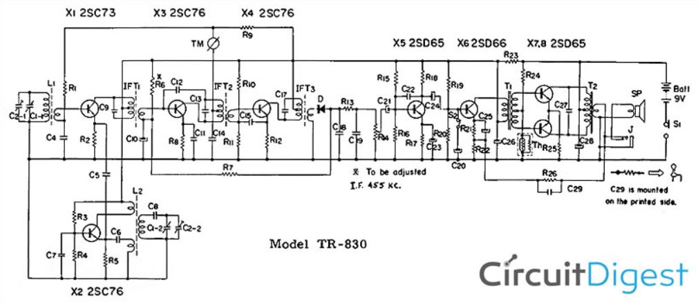

Introduction to Digital Signal Processing (DSP)
What is DSP?
Digital Signal Processing (DSP) involves analyzing, manipulating, and synthesizing signals using digital techniques. Rather than working directly with continuous-time signals (as in analog systems), DSP first converts analog signals into a sequence of discrete samples.
- Sampling: Converting a continuous-time signal \( x(t) \) into a discrete-time sequence \( x[n] \) by taking periodic snapshots at intervals \( T_s \).
- Quantization: Mapping each sample to a finite set of integer levels.
Thus, a continuous waveform is represented in a digital form suitable for storage, transmission, or further numerical processing.
Comparing Analog and Digital
Analog systems handle continuously varying voltages, currents, or other physical quantities. Digital systems, on the other hand, work with discrete numerical values (bits).
Analog Systems
- Continuous in time and amplitude.
- Subject to noise accumulation over long distances.
- Hardware-based filters (resistors, capacitors, inductors) adjust frequency response.
Superheterodyne AM Receiver Block and Circuit Diagrams


To gain idea of the incresed hardware complexity associated with anaolog system, above is the Block and circuit diagram of a Superheterodyne AM Receiver. See refrences for a deeper dive. Compare it to the SDR below.
Digital Systems
- Discrete in time and amplitude.
- Noise-resistant (regeneration of binary signals can reduce error).
- Highly flexible: Filters, transforms, and algorithms can be reprogrammed or updated.

Unlike the analog system above, the SDR only needs hardware to tune the signal down to an intermediate frequency (IF) then it is sampled and handled via software.
In-Phase (I) and Quadrature (Q) Signals
When a signal is transmitted or received at a particular carrier frequency \( f_c \), it can be decomposed into two orthogonal components:
- An in-phase component, denoted \( I \), often aligned with a cosine wave.
- A quadrature component, denoted \( Q \), often aligned with a sine wave.
Mathematically, a bandpass signal \( s(t) \) at frequency \( f_c \) can be represented as:
Why "In-Phase" and "Quadrature"?
- The two components are out of phase by \( 90^\circ \) (i.e., \(\pi/2\) radians).
- They form an orthogonal basis, allowing them to be processed independently and recombined without interference.
QSD and QSE
- Quadrature Sampling Detector (QSD):
A technique for down-converting a high-frequency signal to baseband by simultaneously sampling in-phase and quadrature components. - Quadrature Sampling Exciter (QSE):
The reverse operation—up-converting baseband I/Q signals to a higher, desired carrier frequency.
These approaches exploit the fact that many modern communication standards use I/Q modulation for efficient data encoding.
Resources
- Digital Signal Processing and Software Defined Radio: Theory and Construction of the T41-EP Software Defined Transceiver by Albert F Peter and Dr. Jack Purdum
- Common Microcontroller Software Interface Standard
- Superheterodyne AM Receiver - Working with Block Diagram and Schematics by Aleksander Kopyto